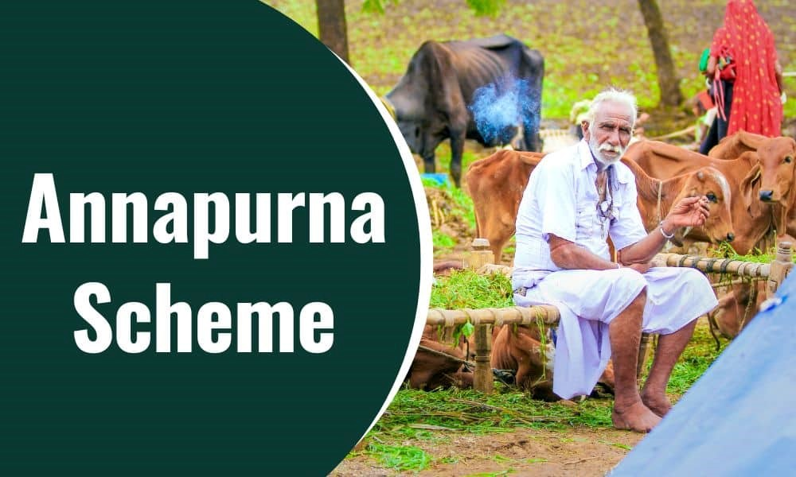

The Annapurna scheme aims at providing food security to meet the requirement of those Senior Citizens who through eligible have remained uncovered under the National Old Age Pension Scheme (NOAPS).
Annapurna Scheme->>
• Annapurna scheme is being implemented in this state from 1st April,2001.This is 100% centrally sponsered scheme. under this scheme 10 Kgs of food grains per month are provided free of cost to the old destiture people of 65 years and above age.
The main eligibility criteria for the benefit of this scheme is that the person should not be in receipt of pension under the national old age pension scheme or state pensionscheme.
• The grants for the 1.25 lacs bendficiareis under “ Annapurna Scheme” was made available to the Social Justice Department of State Government to make available grants from GOI. As per the orders dated 27 November,2003, the State Government has been given a target of 1.20 lacs beneficiaries under the AnnapurnaScheme.
• GOI has sanctioned monthly allocation of 6480 MT (4500 MT of Wheat and 1980MT Rice) for the period from April,2018 to September,2018 vide its letter dated 27.6.2018. Districtwise allocation of 914.378 MT (396.049 MT , Wheat & 518.329MT , Rice) of foodgrains for 24,678 beneficiaries was given by State Government letter dated 11.9.2018.

Senior citizens aged 65 years or older who qualify for the National Old Age Pension Scheme (NOAPS) but are not receiving the pension are eligible. The scheme primarily targets those living below the poverty line (BPL).
Eligible individuals can apply for the Annapurna Scheme through their local Panchayat offices, block development offices, or urban local bodies. Applicants need to submit proof of age, income, and residency, along with any documentation proving eligibility under the NOAPS.
Beneficiaries receive 10 kilograms of free food grains (either wheat or rice) per month to support their nutritional needs and ensure food security in their old age.
Yes, the Annapurna Scheme has a fixed allocation, and only a certain percentage of eligible senior citizens in each state can receive benefits. The selection of beneficiaries is based on priority, targeting the most vulnerable.
No, individuals who are already receiving benefits under the National Old Age Pension Scheme (NOAPS) are not eligible for the Annapurna Scheme. It is specifically designed for those who qualify but are not receiving the pension.
The scheme is implemented through the Ministry of Rural Development in coordination with state governments. The food grains are distributed through the Public Distribution System (PDS) or other designated channels at the local level.
Annapurna scheme
The Annapurna scheme aims at providing food security to meet the requirement of those Senior Citizens who through eligible have remained uncovered under the National Old Age Pension Scheme (NOAPS). Under the Annapurna Scheme, 10 Kg. of food grains per month are to be provided 'free of cost' to the Beneficiary.
READ
Annapurna Scheme
The Annapurna Scheme aims to provide food security for senior citizens who are eligible for but not covered by the National Old Age Pension Scheme. It provides 10kg of free foodgrains per month to destitute individuals over 65 who do not receive a pension from other schemes.
READ
Annapurna scheme guidelines 2000
Under the Annapurna Scheme, 10 Kg. of foodgrains per month are to be provided 'free of cost' to the Beneficiary. The number of persons to be benefited from the Scheme will, in the first instance, be 20% of the persons eligible to receive pension under NOAPS in States/Union Territories.
READ